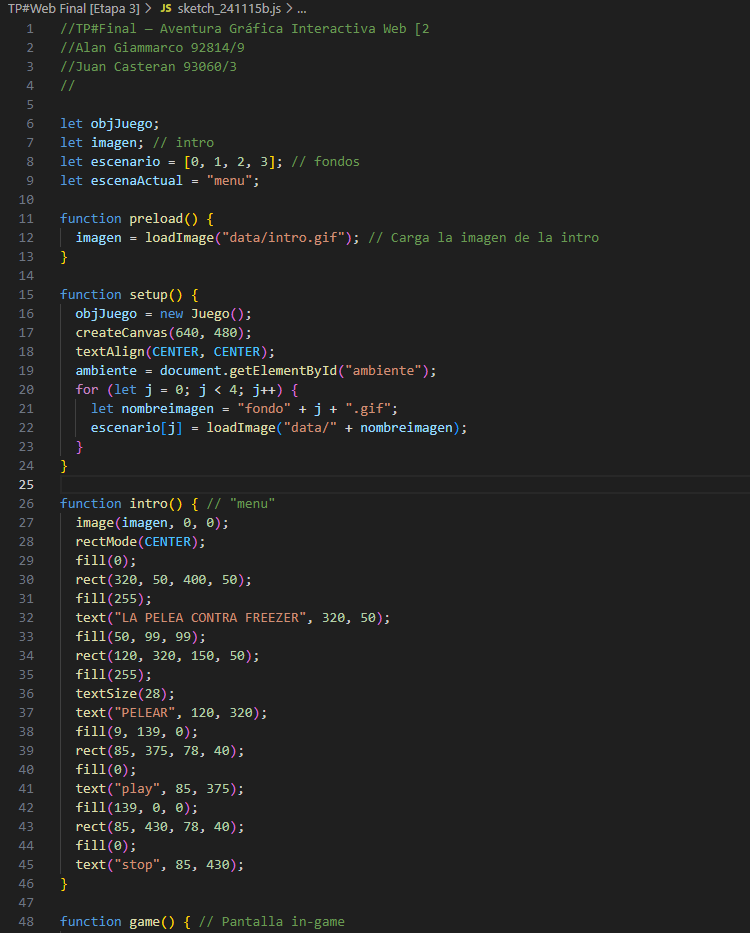

Pelea contra Freezer: detrás de la Aventura
El desarrollo del videojuego incluyó el uso de p5.js para implementar los elementos interactivos y crear una experiencia visual dinámica.
El objetivo principal era capturar la esencia de la saga de Freezer y dar a los jugadores la oportunidad de reescribir el destino de Goku y sus amigos, ademas de poder enfrentarse al gran villano Freezer.
